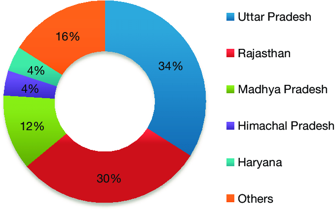

Barley or Jau, scientifically known as Hordeum vulgare L. is one of the most important cereal crops in the world after rice, wheat and maize. Barley plant is a Rabi cereal crop from the grass family Poaceae. Barley crop is mostly found in cooler and semi-arid part of the world. It is believed that barley was originated in the Middle East. During the ancient time it was mainly grown for human consumption but nowadays barley production is also used for animal feed, malt products and human food.
In India, Uttar Pradesh, Rajasthan, Madhya Pradesh, Haryana, Punjab and Himachal Pradesh are the major producers of barley crop.
Climatic requirement: Barley can be grown as summer or winter crop. It can be successfully grown in tropical and subtropical climatic condition. The crop requires around 12-15°C temperature during growing period and around 30-32°C at maturity. The crop is extremely frost sensitive at any stage of growth. Any incidence of frost at flowering stage can result in huge yield loss. Barley crop is tolerant to drought and can survive in high temperatures.
Soil requirement: Barley is mostly cultivated in sandy to moderately heavy loam soils. Therefore, soil of Indo-Gangetic plains having neutral to saline reaction and medium fertility are the most suitable soil types for barley cultivation. Barley crop can be cultivated in saline, sodic and lighter soils too. Soil acidity impairs the root growth of barley crop hence acidic soils are not suitable for barley cultivation.